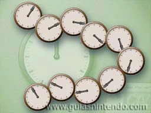
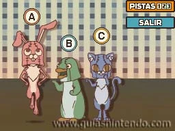
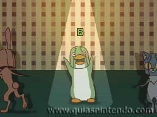
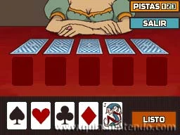
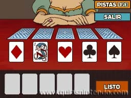

Enunciado
Un reloj analógico normal tiene dos manecillas; la más larga se mueve más rápido. Suponiendo que este reloj funciona bien, ¿cuántas veces se cruzarán las manecillas entre las doce del mediodía y las doce de la noche?
Las manecillas se cruzan una vez cada hora.
Pero no lo hacen a la hora en punto; se cruzarán más o menos a la una y cinco, o sobre las seis y treinta y tres.
Así que, ¿a qué hora se cruzarán por última vez?

10 veces
¡Eso es!
Las manecillas se cruzan 10 veces. Si lo piensas bien, esto es obvio, pero también era fácil equivocarse.
Las manecillas se cruzan una vez cada hora, pero como empiezan y terminan una encima de la otra, dos de las 12 horas no cuentan como un cruce.
¡Anda, compruébalo con un reloj de verdad!

Enunciado
He aquí un clásico: uno de estos tres dice la verdad y los otros dos mienten. Deduce quién dice la verdad teniendo en cuenta sus declaraciones:
A: "Yo no miento nunca."
B: "A miente. ¡Soy yo quien dice la verdad!"
C: "B miente. ¡Quien dice la verdad soy yo!"
Este es un problema clásico de lógica. Sabes que solo uno de los tres dice la verdad.
Empieza por elegir a uno de los tres y supón que dice la verdad. Partiendo de ahí, analiza si la afirmación de esa persona conduce a que haya algún otro que dice la verdad.
Si lo hace, entonces sabrás que el personaje que has elegido está mintiendo.
Si A dice la verdad, entonces B tiene que estar mintiendo. Si B miente, entonces C también dice la verdad.

B
¡Muy bien! B dice la verdad.
La única forma de que solo uno de ellos diga la verdad es que lo que dice B sea cierto. Si A dice la verdad, entonces la afirmación de C de que B también miente es verdad a su vez. Por otra parte, si C dice la verdad, entonces la afirmación de B de que A miente es cierta. En ambos casos te encuentras con dos que dicen la verdad y uno que miente.
Por lo tanto, la única solución posible es que B sea quien dice la verdad.

Enunciado
Has colocado un comodín y cuatro ases de diferentes palos boca abajo en una mesa. Ten en cuenta las siguientes condiciones para determinar la posición de cada carta:
Si el as de tréboles está justo a la derecha del as de corazones, el corazón no puede ser la última carta.
Ni el as de diamantes ni el de picas están al lado del as de corazones. Y ya sabes que el as de tréboles está justo a la derecha del de corazones. Así que, o bien la carta que está a la izquierda del as de corazones es el comodín, o la primera carta es el mismo as de corazones.
Por las otras dos pistas ya sabes que, desde la derecha, las cartas aparecen en este orden: as de picas, as de tréboles y as de corazones.
Respecto a las dos otras cartas... sabes que el as de diamantes no puede estar al lado del de corazones, así que la cuarta carta desde la derecha tiene que ser el comodín.

¡Excelente!
Solo un dominio total de los principios de la lógica podía ayudarte a resolver un puzle como este.